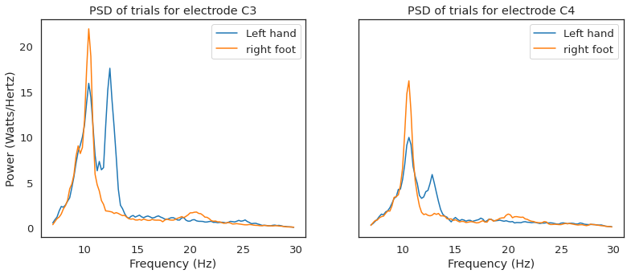

Supervised by Dr Sam John

This is a project offered to me by Dr Sam John as I was looking for a way to break into the Brain Computer Interface field. He simply told me to read up, try out a Support Vector Machine on the raw data and here I am!
This is using dataset IVc from the BCI competition
This is also my first data science project, you will see some some machine learning and learn a little neuroscience~
The end goal is to have two people playing pong against each other only using motor imagery.
A little explanation
Our target features are quantifying Event Related Desynchonisation (ERD) and Event Related Sychronisation (ERS) in the EEG data. ERD is a decrease in signal power and ERS is an increase in signal power, from this we can distinguish when an individual is resting and thinking about moving their left hand or right foot. What's more is this feature is stronger during motor imagery than during movement.
This feature has a few interesting properties where based on left hand/right foot motor imagery,
different areas of the will report a stronger ERD/ERS during the motor imagery period.
For example, We know that ERD is a contralateral event, so thinking about your left hand means
ERD will occur on the right side of the motor cortex more than the left side.
To be concrete:
On electrode C4 after the start of left hand motor imagery period you expect it to register a stronger decrease in signal power - ERD, than electrode C3 because electrode C4 is on the right side of the brain and hence responsible for the left side of your body.
If you were doing right hand motor imagery it would be the other way round!
To illustrate, here is a plot of the Power Spectral Density for the trials of left hand/right foot.
We can see that for left hand motor imagery, the frequencies 7-12Hz are decreased on electrode C4 and not C3. This is the Event Related Desychronisation we are looking for regarding the hands. I am not sure what it is meant to be for feet.
Rereferencing, Filtering, CSP, PSD
From the literature, traditionally C3 & C4 contain the best data so I will be using these two as my minimum.
EEG also is notorious for a low signal to noise ratio, as it is notoriously susceptible to noise. Below details the ways we can extract some features from the EEG and get the data to be spick and span~
Filtering:
The ERD features are reported to be in the bandwidth of around 7-12Hz with some patterns
emerging around the high 20s where the literature often does 7-30Hz for filtering. For this I chose a zero-phase butterworth filter so lets have a look
at it's frquency response on electrode C3 to make sure it doesn't cut our signal.
So it looks like order 23 is starting to break, so let's do order 22 to maintain as much information. We can confirm the filter worked by plotting the power spectral density (PSD) with Welches periodogram.
Clearly the temporal domain isn't very distinguishable (the time domain) by eye but it may be different
to an algorithm.
So to illustrate the differences:
Rereferencing
This turned out to be the most important step as it made a huge difference to my data.
The idea behind re-referencing is to express the voltage of the EEG channels with respect to another,
this helps amplify inter-electrode patterns.
There are many ways to do this, such as Common Average Referencing (CAR), Cz referencing, mastoid referencing, the list goes on... won't bore you down with all of it, but I can show you what referencing to Cz did to my signals as that is the one I chose.
The other (more popular method) CAR is when you subtract the average of all the
electrodes from the individual electrodes, this works because what you are essentially doing is an attempt at removing
noise that is common to all the electrodes
However, in practice, to achieve such an ideal reference one would require large number of
electrodes that cover the whole head uniformly, which is not the case in EEG recordings where
limited number of electrodes cover mostly the upper part of the head To use as little electrodes as possible, Cz rereferencing will be used. Power Spectral Density (PSD) So the simplest way is represet each trial in the frequency domain as we had demonstrated before: Epoching Extract two, 1 second windows related to motor imagery and one
1 second window for rest from each trial. The first 1 second motor imagery window is 1 second after onset of cue. The second will be the 1 second window 2 seconds after onset of the cue which will hopefully
capture the subject in the later part of motor imagery. The 1 second of rest window will be taken 0.75 seconds after the end of the motor imagery section (3.5 seconds from cue)
to help give space for the subject to cool down from doing motor imagery. Final datasets The dataset condition: FINALLY, the cool part~ Firstly, NO deep learning. Not nearly enough samples. So we will stick to a range of linear classifiers
which are used in the BCI literature: Splitting the data We will split the data with two thirds to train the model and one third to test but keeping the trials in order from when they
were first and last recorded. This will mimic how it
would work in real life because you can't train on future trials and then classify in the past when doing this experiment in real time. Results It works! Kinda good enough ish... It works! To show asychronous (continuous) decoding, instead of just getting the class as the output for each trial, we can use a sliding window of 1 sec
and pump out continuous classification of a trial from -1 second before onset of motor imagery to 2 seconds after the motor imagery has ended. This would be akin to initiating motor imagery at will as opposed to when a stimulus is presented! To recap, the motor imagery trials are 3.5s long and interspersed with 1.75s-2.25s of rest.
The images below are marked with the green line as the start of motor imagery and the red line as the end. So the classifier will output a value of 1 for right foot, -1 for left hand and 0 for rest. We can then use a smoothing algorithm to give us a
motor imagery scale/confidence of sorts. Some of the trials are shown below:
Now at this point we could just plug that into the classifier and train it, however it is still noisy so
we need a way to downsample it without losing too much information and isolate the features even more. 
Classifying!
Final Product